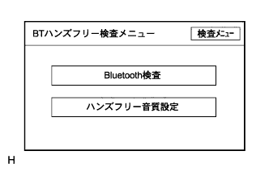

)参照。
)参照。ハンズフリーシステム ダイアグノーシスシステム |
)参照。ダイアグノーシス起動(要領は参照)
ダイアグノーシス解除(要領は参照)
|  |
| 表示 | 内容 |
|---|---|
| Bluetooth検査 | Bluetooth検査画面を表示 |
| ハンズフリー音質設定 | ハンズフリー音質設定を行う画面を表示する |
Bluetooth検査
ダイアグノーシスを起動させ、ダイアグ検査メニュー画面を表示させる。
ダイアグ検査メニュー画面の“BTハンズフリー検査”を選択し、BTハンズフリー検査メニュー画面を表示させる。
BTハンズフリー検査メニュー画面の“Bluetooth検査”を選択し、Bluetooth検査メニュー画面を表示させる。
Bluetooth検査メニュー画面の“バージョン情報”を選択し、バージョン情報画面を表示させる。
バージョン情報を確認する。
| 表示 | 内容 |
|---|---|
| 統合Ver. | Bluetoothモジュールのソフト全体のバージョンであり、統合バージョンでソフトウェアを管理する |
| APｌバージョン情報表示 | APｌソフトウェアのバージョンを示す |
| Upper Stackバージョン情報表示 | Upper Stackソフトウェアのバージョンを示す |
| Lower Stackバージョン情報表示 | Lower Stackソフトウェアのバージョンを示す |
 |
ハンズフリー音質設定
ダイアグノーシスを起動させ、ダイアグ検査メニュー画面を表示させる。
ダイアグ検査メニュー画面の“BTハンズフリー検査”を選択し、BTハンズフリー検査メニュー画面を表示させる。
BTハンズフリー検査メニュー画面の“ハンズフリー音質設定”を選択し、ハンズフリー音質設定画面を表示させる。
画面スイッチを操作し、音量の調整を行う。
| 項目 | 表示内容 |
|---|---|
| 受話音量調整項目 | ハンズフリー通話を行っている時の受話音量(自分に聞こえる相手の声)を調整する |
| 送話音量調整項目 | ハンズフリー通話を行っている時の送話音量(自分に聞こえる相手の声)を調整する |